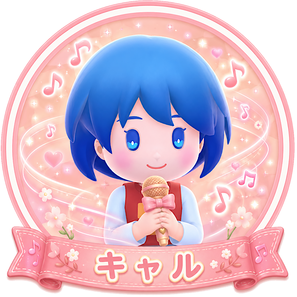

「みんなを支える献身サポーター」タイプ
あなたは、自分だけが目立つよりも、チーム全体がうまく回ることに喜びを感じるタイプ。
誰かが困っていたり、場が崩れそうになった時に「何とか支えたい」と思える人です。
直接ガンガン動くよりも、周りの状況を見てピンチを和らげる動きが得意。
不慣れな人や焦っている人がいる時ほど、あなたの落ち着きがチームを助けます。
キャルは歌でお客さんの待ち時間減少を止められる、チーム全体を守るスキルを持っています。
自分は一時的に動けなくなりますが、その分、仲間が立て直す時間を作れます。
特に人数が多い時や、他のプレイヤーを支えたい時に活躍しやすいキャラ。
「自分が支えることでみんなが動きやすくなる」ことにやりがいを感じる人に向いています。